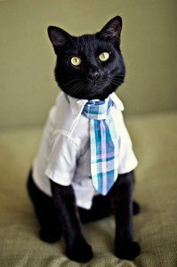
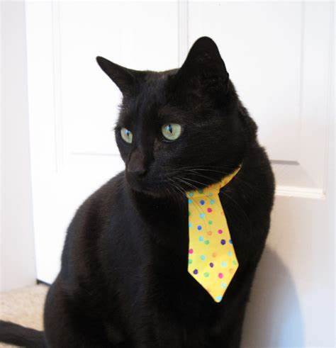
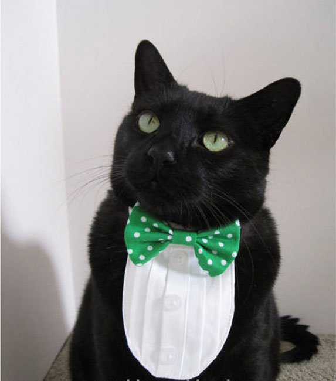
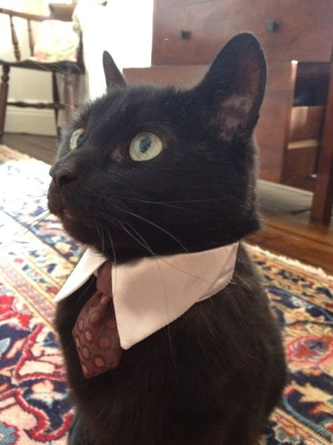

la vida de glottis

el gato que soñaba con ser presidente de Argentina Glottis es un felino particularmente interesante y carismático, nacido en la hermosa ciudad de Córdoba, Argentina, en enero de 2009. Desde su temprana edad, demostró tener una personalidad única y ambiciosa, llena de sueños y metas que superaban las expectativas convencionales de un gato común.
Desde el momento en que fue adoptado por su dueño, Raúl, Glottis destacó por su amor incondicional hacia el tango, esa música típicamente argentina que tanto identifica al país. Mientras Raúl disfrutaba de las melodías y acordes de Gardel y Piazzolla, Glottis se contagiaba de la pasión que emanaba de estas canciones y comenzó a moverse con gracia y energía siempre que sonaba un tango.
Pero Glottis no solo bailaba al ritmo del tango, también tenía una afinidad inusual por el dinero. Desde pequeño, mostraba una fascinación particular por los billetes, tanto que se divertía jugando con ellos y se emocionaba cada que veía a Raúl contar su salario mensual. Esta pasión por el dinero una de las características que lo diferenciaron de otros gatos y se convirtió en una parte importante de su personalidad.
A medida que Glottis crecía, comenzó a manifestar una ambición extraordinaria. El gato no solo soñaba con disfrutar de una vida lujosa y confortable, sino que también deseaba tener un impacto positivo en la sociedad. Este sueño inspiró una loca idea en su mente: convertirse en presidente de Argentina. A pesar de ser consciente de las limitaciones físicas (y legales) que como gato tendría para alcanzar tal posición de poder, Glottis no dejó que eso lo desalentara. Comenzó a estudiar la historia y la política del país, recopilando información sobre los problemas y desafíos que enfrentaba la nación. Soñaba con transformarla en un lugar mejor, donde todos los ciudadanos pudieran disfrutar de una vida próspera y justa
A medida que Glottis se hacía mayor, su determinación por convertirse en presidente solo se hacía más fuerte. Sin embargo, pronto surgió un nuevo y emocionante capítulo en la vida de Glottis. Su dueño, Raúl, decidió mudarse a la cosmopolita ciudad de Buenos Aires en busca de nuevas oportunidades laborales. El cambio de ambiente no solo enriqueció la vida de Glottis, sino que también impulsó su dedicación a su sueño de ser presidente. La multiculturalidad y la diversidad de pensamiento que encontró en la capital argentina avivaron su deseo de liderar y generar un cambio significativo.
Aunque esta historia dio inicio con un gato juguetón y encantador, Glottis demostró que los sueños no saben de especies ni de barreras. A día de hoy, mientras continúa disfrutando del tango, del amor de su dueño Raúl y de su fascinación por el dinero, en lo más profundo de su ser sigue latiendo la pasión por ser presidente y su incansable búsqueda de un futuro mejor para todos los argentinos.